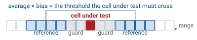
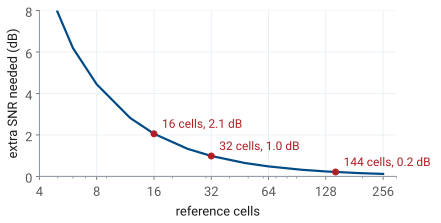
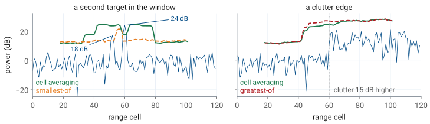
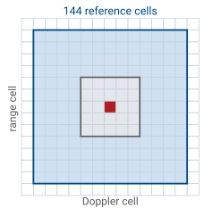
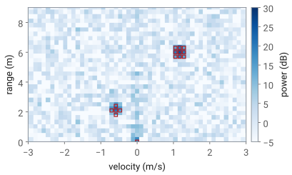

L30 - CFAR Processing#
CFAR Processing
A threshold set from 32 neighboring cells holds one false alarm in a million wherever the noise goes, for 1 dB more SNR.
Lesson 30 · Antennas, Phased Arrays, and Radar Systems · Dr. Neil Rogers
Printing
To print the slides, switch to present mode and print: one slide a sheet, with room for notes. Print from read mode for the whole lesson.
Learning Objectives
- I can apply constant false-alarm rate (CFAR) processing to radar data and evaluate detection performance.
Lesson 27 set a detection threshold from the probability of false alarm, assuming the processor knows the noise power, and ended by showing what happens when it does not. This lesson replaces the assumed noise power with one measured from the data around each cell. That is constant false-alarm rate (CFAR) processing, and it is the detector you will run on your own range-Doppler maps from Lesson 29.
The L28–L31 Labs are worked outside class, so this page carries the whole argument in read mode. The lesson comes first; the L30 Lab follows it on this page.
The Noise Floor Moves
A fixed threshold assumes the noise power \(P_n\) is known.
3 dB more noise turns \(P_{fa} = 10^{-6}\) into \(10^{-3}\).
CFAR measures \(P_n\) around each cell it tests.
Lesson 27 found that noise power in one cell is exponentially distributed with mean \(P_n\), so a threshold \(T\) is crossed by noise alone with probability
The threshold for \(P_{fa} = 10^{-6}\) is \(T = 13.8\ P_n\), 11.4 dB above the mean noise. If the noise rises by a factor \(g\) while \(T\) stays put, the probability becomes \(P_{fa}^{1/g}\), and a 3 dB rise turns \(10^{-6}\) into \(10^{-3}\). At the million decisions a second of the L29 burst, that is a thousand false targets a second.
The noise on a real map does move. Stationary clutter fills the cells near zero velocity, strong reflections fill the cells nearest the radar, and the receiver gain sets the level of everything. A fixed threshold high enough for the worst of these misses targets everywhere else. Lesson 27’s last figure showed the alternative: estimate the noise power from the cells around the one being tested, and set the threshold from that estimate.
Cell Under Test, Guard, and Reference

Reference cells estimate the local noise.
Guard cells keep the target’s own energy out of the estimate.
The window slides, so every cell gets its own threshold.
The detector tests one cell at a time, the cell under test. On each side of it, it skips a few guard cells and then averages a block of reference cells. The average is the estimate of the noise power at this cell, and the threshold is that estimate multiplied by a bias. If the cell under test exceeds the threshold, the detector declares a target there. Then the window moves one cell and the detector repeats the test, so the threshold is recomputed at every cell from that cell’s own neighbors.
The figure draws 2 guard and 4 reference cells a side so that the cells are readable. The running example in this lesson uses 2 guard and 16 reference cells a side, \(N = 32\) reference cells in all, which is the local-average threshold in Lesson 27’s last figure. ADI’s CFAR lab lists the same steps for the PHASER: pick the cell, skip the guard cells, average the reference cells, multiply by the bias, and compare.
Cell-Averaging CFAR
\(P_{fa}\) depends on \(\alpha\) and \(N\), and not on \(P_n\).
With \(z_i\) the power in reference cell \(i\), the cell-averaging (CA) CFAR estimate of the noise power is the sample mean \(\hat{P}_n\), and the threshold is \(T = \alpha\hat{P}_n\). The bias \(\alpha\) is the number we choose.
For a given estimate, the cell under test crosses the threshold with probability \(e^{-T/P_n}\), the Lesson 27 result. The estimate is itself random, so the probability of false alarm is the average of that over the reference cells. Each \(z_i\) is independent and exponential with mean \(P_n\), and for one such cell the average of \(e^{-cz_i/P_n}\) is \(1/(1 + c)\). The exponential of a sum is a product, so
where the angle brackets mean the average over the noise. \(P_n\) has dropped out. Wherever the noise sits, whether 0 dB or 15 dB, the probability that noise alone crosses the threshold is the same, which is what constant false-alarm rate means. Two assumptions came with it: the reference cells hold only noise, and their noise has the same mean as the noise in the cell under test. The rest of the lesson is about what happens when either one fails.
The Bias From the False-Alarm Probability
A known \(P_n\) needs 11.4 dB; 32 reference cells need 12.4 dB.
Inverting the false-alarm expression gives the bias for a chosen \(P_{fa}\):
For \(P_{fa} = 10^{-6}\) and \(N = 32\), \(\alpha = 32(10^{6/32} - 1) = 17.3\), or 12.4 dB. With 16 reference cells it is 21.9, 13.4 dB; with 144 it is 14.5, 11.6 dB. As \(N\) grows, \(P_{fa}^{-1/N} = e^{\ln(1/P_{fa})/N} \approx 1 + \ln(1/P_{fa})/N\), so \(\alpha \to \ln(1/P_{fa}) = 13.8\), the 11.4 dB threshold of Lesson 27. An average of infinitely many cells is the noise power itself.
The bias is larger with fewer cells because the estimate scatters. Sometimes it comes out low, the threshold drops with it, and noise crosses more often than it would with the true \(P_n\). Raising \(\alpha\) pays for those low estimates. In the code later in this lesson, bias_db is \(10\log_{10}\alpha\).
Note
ADI’s target_detection_dbfs.py averages the reference cells in dB and adds the bias in dB. That is a different estimator: the average of \(10\log_{10}z\) over exponential noise sits 2.5 dB below \(10\log_{10}P_n\), so a bias in ADI’s code is not the \(\alpha\) of this lesson. Its threshold still follows the noise, so it is still a CFAR, but this lesson’s numbers do not apply to it. Read ADI’s code beside the provided cfar_2d, which averages power.
CFAR Loss

A higher bias needs more SNR for the same \(P_d\).
32 cells cost 1.0 dB; 16 cost 2.1 dB.
More cells cost less, until the window reaches noise of a different level.
The higher threshold is not free. A target that a known-noise detector finds with \(P_d = 0.9\) at \(P_{fa} = 10^{-6}\) needs 13.2 dB of SNR (Albersheim’s fit in Lesson 27 gave 13.1 dB). The CA-CFAR detector needs more, because its threshold is higher on average and scatters with the estimate. The difference is the CFAR loss. The figure computes it by averaging the Lesson 27 detection probability over the scatter of \(\hat{P}_n\): 2.1 dB with 16 reference cells, 1.0 dB with 32, and 0.2 dB with 144.
The figure argues for many reference cells, and the noise argues against it. Every reference cell is assumed to have the same mean noise as the cell under test. A window 32 cells wide in range spans 9.6 m at the 0.30 m cells of the L29 burst, and the clutter near the radar does not stay level over 9.6 m. The number of reference cells trades the CFAR loss against how local the estimate is.
Choosing the Guard Cells
A Hann window puts −6 dB of the target in each neighboring cell.
No guard cells: the target raises its own threshold.
Guard cells cover the target’s extent, in range and in Doppler.
A target does not occupy exactly one cell. The window applied before the FFT, Hann in ADI’s scripts and in the L29 range-Doppler map, widens the target’s peak so that each neighboring cell holds a quarter of its power, 6 dB down. A person is also larger than one 0.30 m range cell, and moving arms and legs spread the echo over several Doppler cells.
Without guard cells, that spill lands in the reference cells. Take a 20 dB target with no guard cells and 32 reference cells. Its two neighbors hold 14 dB each, 25 times the noise power, and they raise the estimate from \(P_n\) to about \((30 + 2 \times 26)/32 = 2.6\ P_n\), which lifts the threshold by 4.1 dB. The target still crosses, but its margin shrinks from 7.6 dB to 3.5 dB, and a weaker target would not. One or two guard cells a side remove the problem. More guard cells than the target’s extent do no harm to the target, but they push the reference cells farther out, where the noise is less likely to match.
CFAR Explorer
The widget draws one range profile of 240 cells, in dB, with the CFAR threshold over it in green. Cells from 168 on hold clutter 15 dB above the quiet noise. Five targets, each with the Hann window’s −6 dB neighbors, are marked by triangles along the top, dark when found and pale when missed: a pair eight cells apart near cell 56, one alone near 104, one in the clear just short of the clutter at 160, and one inside the clutter. Found targets are ringed; noise crossings are red dots and are counted as false alarms. The readout gives the design \(P_{fa}\) for the method, bias, and number of reference cells.
Start at 2 guard and 16 reference cells a side with a 12.4 dB bias, the lesson’s running example. Set the guard cells to 0 and watch each target lift its own threshold. Lower the bias until false alarms appear, and compare where they appear with the design \(P_{fa}\). Then switch the method to greatest-of and smallest-of, the subject of the next frames, and press New noise for another draw of the same scene.
Where Cell Averaging Fails

A second target in the window hides the weaker one: masking.
At a clutter edge, one average mixes two noise levels.
Cell averaging assumes that every reference cell holds noise of the same mean as the cell under test. The figure shows the two common ways that fails.
On the left, an 18 dB target sits eight cells from a 24 dB target. When the weaker target is the cell under test, the stronger one and its two neighbors are in its reference window, and they hold about \(251 + 2 \times 63\) times the noise power. Spread over 32 cells, that raises the estimate by a factor of about 12.7, 11 dB, so the threshold rises to 23.5 dB and the 18 dB target is missed. This is masking, and it happens wherever targets are close together: two people walking side by side, or a hand in front of a body.
On the right, the noise rises 15 dB at cell 60, the edge of a clutter region. Two things go wrong. A cell in the clear just before the edge has half its reference cells in the clutter, so its threshold rises by about 12 dB and a target there is masked. A cell in the clutter just past the edge has half its reference cells in the clear, so its estimate is half what it should be, the threshold sits 3 dB low, and its \(P_{fa}\) rises from \(10^{-6}\) to \((1 + \alpha/32)^{-16} = 10^{-3}\). The clutter edge produces false alarms on one side and misses on the other.
Greatest-Of and Smallest-Of
Greatest-of holds \(P_{fa}\) at a clutter edge.
Smallest-of finds a target beside another.
Each needs its own bias, and costs 0.2 or 0.7 dB more than cell averaging.
Both variants average the two sides of the window separately, \(\hat{P}_\text{near}\) over the reference cells nearer the radar and \(\hat{P}_\text{far}\) over those farther away, and then keep one of the two.
Greatest-of (GO) keeps the larger. At a clutter edge, the side in the clutter wins, so a cell just inside the clutter is compared with the clutter level and its false alarms stay near the design value; the dashed red line in the right panel of the last figure does that. The cost is in the clear cells just before the edge, which are also compared with the clutter, and in masking, which GO makes worse.
Smallest-of (SO) keeps the smaller. When a second target sits on one side, the clean side wins and the weaker target is found, as the dashed orange line in the left panel shows. SO pays for it at clutter edges, where it takes the quiet side and lets the clutter through.
Neither max nor min of two averages is an average, so each has its own relation between \(\alpha\) and \(P_{fa}\). With 16 cells a side and \(P_{fa} = 10^{-6}\), GO needs a bias of 12.0 dB on its larger half and SO 13.7 dB on its smaller half, against 12.4 dB for CA. For \(P_d = 0.9\), GO needs 0.2 dB more SNR than CA and SO 0.7 dB more. ADI’s cfar() takes the three methods as 'average', 'greatest', and 'smallest'; the widget switches among them.
The Ends of the Map
The first and last range cells have reference cells on one side only.
One-sided with the same bias, \(P_{fa}\) rises from \(10^{-6}\) to \(8 \times 10^{-6}\).
Doppler wraps: the cell past +15 m/s is −15 m/s.
The window runs out at the ends of the data. In range, a cell within \(g + n\) of the first or last cell has fewer reference cells on one side, or none. There are three choices. Skip those cells and never declare a detection there. Average whatever reference cells exist, which is what this lesson’s code does; with 16 cells instead of 32 and the bias left at 12.4 dB, \(P_{fa}\) rises to \((1 + 17.3/16)^{-16} = 8 \times 10^{-6}\), which is a small price for keeping the cells. Or raise the bias for the cells with fewer neighbors. The one choice to avoid is padding with zeros and counting them, which drags the estimate down and the false alarms up. ADI’s cfar() does not test the end cells against their own neighbors: it gives them the lowest threshold found anywhere in the profile, so a strong return near either end is reported whatever the noise around it. The cells nearest 0 m on the PHASER hold the kit’s own transmit-to-receive leakage, so they are usually excluded in any case.
Doppler is different. The Doppler FFT is periodic: the cell above the highest velocity, +15 m/s for the L29 burst, is the lowest, −15 m/s. A reference window that runs off one end of the Doppler axis continues at the other, so it never runs out, and the Doppler edge needs no special case.
2D CFAR on the Range-Doppler Map

The guard and reference cells become nested boxes.
2 guard and 4 reference cells each way give 144 cells: 11.6 dB, 0.2 dB loss.
The zero-velocity clutter ridge is an edge: run MTI first.
The range-Doppler map has two axes, so the window does too. The guard cells become a box around the cell under test, and the reference cells are the ring between that box and a larger one. With 2 guard and 4 reference cells each way from the cell under test, in both range and Doppler, the outer box is 13 by 13 cells and the guard box 5 by 5, so \(N = 169 - 25 = 144\). The bias for \(P_{fa} = 10^{-6}\) is 11.6 dB and the CFAR loss is 0.2 dB, far better than any one-dimensional window can do while staying within a few cells of the cell under test.
The two directions need not match. At the L29 burst’s 0.30 m range cells and 0.12 m/s velocity cells, a walking person spans a cell or two in range but many cells in Doppler, because the arms and legs move at different speeds from the body. A wider guard band in Doppler than in range keeps that spread out of the estimate.
Without MTI, every stationary object puts its echo at zero velocity, so the map has a ridge of clutter along the zero-Doppler column. To a CFAR window, that ridge is a clutter edge in the Doppler direction: cells on the ridge are compared with an average that is mostly noise, and they are declared targets. MTI from Lesson 29 removes most of the ridge before CFAR runs.
A map of \(512 \times 256\) cells with 144 reference cells each is 19 million additions. A Python loop over every cell is slow. A convolution of the map with the window does the same sums in a fraction of a second, and the next frame’s code works that way.
Detections From the Map

The provided
cfar_2dreturns a detection map and a list of (range, velocity, SNR).One target lights a cluster of cells.
Clutter left after MTI is detected too.
The map is synthetic, built with the L29 burst’s cells: a walker at 6.0 m and +1.2 m/s, a hand at 2.1 m and −0.6 m/s, and the clutter a 2-pulse canceller leaves at zero velocity near the radar. CFAR with 2 guard and 4 reference cells each way and an 11.6 dB bias declares both targets and the strongest clutter cell. Each target lights a cluster of cells, because its peak spreads into its neighbors and those neighbors are well above the noise too. A detection list that feeds a classifier or a tracker needs one entry per object, so a cluster is reduced to its strongest cell.
The excerpt is the cell-averaging path of the provided cfar_2d in radar_lab.py, which the L30 Lab notebook calls; the provided version also takes method="ca", "go", or "so" for the variants above. It takes the map in dB, as Lesson 29 plots it, and converts it back to power, because the CFAR statistics of this lesson are for power. guard and ref are (range, Doppler) pairs of half-widths. The two convolutions sum each cell’s reference window and count how many cells it held, so an end cell in range averages only the cells that exist; the Doppler axis is padded by wrapping. Pass the map’s axes, and the detection list comes back in meters and meters per second.
import numpy as np
from scipy import signal
def cfar_2d(rd_map, guard, ref, bias_db, axes=None):
P = 10 ** (rd_map / 10) # dB back to power
(gr, gv), (rr, rv) = guard, ref # (range, Doppler) half-widths
win = np.ones((2 * (gr + rr) + 1, 2 * (gv + rv) + 1))
win[rr:rr + 2 * gr + 1, rv:rv + 2 * gv + 1] = 0 # guard cells and the cell under test
def pad(A): return np.pad(np.pad(A, ((0, 0), (gv + rv,) * 2), "wrap"), ((gr + rr,) * 2, (0, 0)))
total = signal.fftconvolve(pad(P), win, mode="valid")
count = signal.fftconvolve(pad(np.ones_like(P)), win, mode="valid")
snr_db = 10 * np.log10(P / (total / count)) # each cell over its local noise
det = snr_db > bias_db
r_ax, v_ax = axes or (np.arange(P.shape[0]), np.arange(P.shape[1]))
hits = [(r_ax[i], v_ax[j], snr_db[i, j]) for i, j in zip(*np.nonzero(det))]
return det, hits
The SNR in each entry is the cell’s power over its own local noise estimate, the same quantity the threshold tests, so it is the number to compare with Lesson 27.
Measuring the False-Alarm Rate
At \(10^{-6}\), a \(512 \times 256\) map averages one false alarm every 7.6 maps.
Check the design at a lower bias, where false alarms are common.
\(P_d\) is the fraction of maps that find the target.
The bias is set from a design \(P_{fa}\), and the way to check it is to count. On maps with no target, or in the cells far from any target, every detection is a false alarm, and the measured probability is the number of false detections over the number of cells tested.
The trouble is the size of the number. A \(512 \times 256\) map is 131 072 decisions, so at \(10^{-6}\) it averages 0.13 false alarms, one every 7.6 maps. Counting ten of them to get the rate within about a third takes 76 maps. Instead, lower the bias to a design \(P_{fa}\) of \(10^{-3}\) or \(10^{-4}\), where a single map has 13 to 130 false alarms, and check the measured rate against \((1 + \alpha/N)^{-N}\) at a few biases. If the counts follow the curve, the extrapolation to \(10^{-6}\) is sound; if they come out high, the noise in your reference cells is not the noise in your cells under test.
The probability of detection is measured the same way, against a target you placed: the fraction of maps in which CFAR declares it. Compare it with Lesson 27’s curves at the SNR the detection list reports, with the CFAR loss added. For a hand or a person, which fluctuate from map to map, expect the Swerling numbers of Lesson 27 rather than the steady ones.
Summary
Symbol / idea |
What it is |
Number to remember |
|---|---|---|
Fixed threshold, noise up by \(g\) |
\(P_{fa}' = P_{fa}^{1/g}\) |
3 dB: \(10^{-6} \to 10^{-3}\) |
Cell under test, guard, reference |
test one cell; skip its neighbors; average the next ones |
2 guard and 16 reference cells a side |
CA-CFAR |
\(T = \alpha\hat{P}_n\), \(P_{fa} = (1 + \alpha/N)^{-N}\) |
independent of \(P_n\) |
Bias |
\(\alpha = N(P_{fa}^{-1/N} - 1)\) |
12.4 dB for 32 cells at \(10^{-6}\); 11.4 dB as \(N \to \infty\) |
CFAR loss |
extra SNR for the same \(P_d\) |
2.1 dB at 16 cells, 1.0 dB at 32, 0.2 dB at 144 |
Guard cells |
keep the target’s spread out of the estimate |
Hann: −6 dB one cell away |
Masking |
a second target raises the threshold |
24 dB eight cells away hides 18 dB |
Clutter edge |
one average over two noise levels |
\(P_{fa}\) to \(10^{-3}\) just inside the clutter |
Greatest-of, smallest-of |
keep the larger or smaller half |
GO for edges, SO for close targets; 0.2 and 0.7 dB more loss |
Ends of the map |
range: one-sided; Doppler: wraps |
one-sided at the same bias: \(8 \times 10^{-6}\) |
2D CFAR |
nested boxes on the range-Doppler map |
144 cells: 11.6 dB, 0.2 dB loss |
Measured \(P_{fa}\) |
false detections over cells tested |
\(10^{-6}\) on \(512 \times 256\): one every 7.6 maps |
L30 Lab
Turn on the GUI’s CFAR overlay first.
In the notebook, tune guard, reference, and bias to a target false-alarm rate.
Switch cell averaging to greatest-of and compare.
Keep the detection lists for the L31 Lab.
The L30 Lab starts in the GUI: turn on its CFAR overlay over the live range-Doppler map and watch the threshold rise and fall with the noise around your targets. The rest runs in the lab’s notebook, which calls the provided cfar_2d from radar_lab.py on the range-Doppler maps you saved in the L29 Lab. You tune the guard and reference cells for your own targets and set the bias to reach a target false-alarm rate, switch from cell averaging to greatest-of at the clutter near zero velocity, and measure the false-alarm rate and the probability of detection against the predictions of Lesson 27 and this lesson. Changes of your own to the provided code, beyond the required tasks, count as Extra Effort. The detection lists it produces, one entry per target with its range, velocity, and SNR, are what the L31 Lab classifies. For the final report, keep the settings you chose, the false-alarm rate you measured, and why the two differ if they do.
Note
The L30 Lab is under construction. Its procedure and packet follow the L29 Lab.